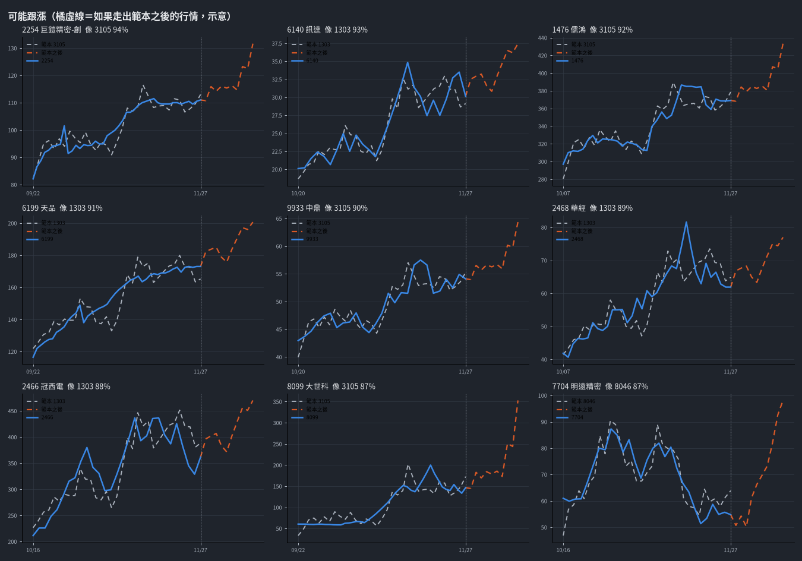

🧭 範本選股 2026-11-20
範本：2409 友達、1303 南亞、3189 景碩、8046 南電、3711 日月光投控、3105 穩懋（08/03～10/02 走勢）｜比對 488 檔｜相似度 70% 以上全部列出
與 2409 友達 相似的有（24 檔）
| # | 代號 | 名稱 | 相似度 | 收盤 | 近10日 | 近2月 | 備註 |
|---|---|---|---|---|---|---|---|
| 1 | 8089 | 康全電訊 | 93% | 32.35 | +30.4% | +78.7% | 法人 -157（5日 +54）、量 0.7倍（近10日 2.4倍） |
| 2 | 9933 | 中鼎 | 92% | 51.5 | +16.0% | +20.5% | 法人 +6,630（5日 +44,555）、量 1.6倍（近10日 4.3倍） |
| 3 | 2468 | 華經 | 90% | 69.1 | +14.8% | +58.3% | 法人 +3,340（5日 +2,902）、量 2.7倍（近10日 2.8倍） |
| 4 | 1477 | 聚陽 | 90% | 220 | +3.3% | +15.2% | 法人 +1,563（5日 +2,760）、量 2.4倍（近10日 1.8倍） |
| 5 | 6782 | 視陽 | 89% | 283.5 | +3.3% | +22.5% | 法人 +118（5日 +998）、量 3.6倍（近10日 2.1倍） |
| 6 | 6697 | 東捷資訊 | 89% | 59 | +7.5% | +43.7% | 法人 -131（5日 -2）、量 0.5倍（近10日 3.2倍） |
| 7 | 8099 | 大世科 | 89% | 142.5 | -4.0% | +141.5% | 法人 -210（5日 +370）、量 3.6倍（近10日 2.6倍） |
| 8 | 1476 | 儒鴻 | 88% | 364 | +5.1% | +28.2% | 法人 +732（5日 +2,115）、量 1.4倍（近10日 1.9倍） |
| 9 | 6148 | 驊宏資 | 88% | 52.5 | +22.4% | +43.2% | 法人 -789（5日 +1,047）、量 2.7倍（近10日 2.5倍） |
| 10 | 2412 | 中華電 | 88% | 162.5 | -0.6% | +13.2% | 法人 +6,259（5日 +10,724）、量 2.6倍（近10日 1.6倍） |
| 11 | 6108 | 競國 | 88% | 34.45 | +28.1% | +55.9% | 法人 +51（5日 -3,591）、量 0.1倍（近10日 1.7倍） |
| 12 | 7765 | 中華資安 | 86% | 294.5 | +24.8% | +22.7% | 法人 +406（5日 +266）、量 11.2倍（近10日 13.0倍） |
| 13 | 2466 | 冠西電 | 86% | 387 | +29.4% | +272.1% | 法人 +51（5日 +230）、量 0.1倍（近10日 0.9倍） |
| 14 | 2465 | 麗臺 | 84% | 110.5 | -2.2% | +22.2% | 法人 -48（5日 -201）、量 0.1倍（近10日 1.9倍） |
| 15 | 2254 | 巨鎧精密-創 | 84% | 109.5 | -0.5% | +47.6% | 法人 -216（5日 -344）、量 0.9倍（近10日 1.0倍） |
| 16 | 8272 | 全景軟體 | 83% | 82.9 | -6.1% | +27.5% | 法人 -44（5日 +88）、量 2.7倍（近10日 5.5倍） |
| 17 | 6199 | 天品 | 82% | 169.5 | +3.7% | +65.4% | 法人 -2,877（5日 -2,063）、量 1.4倍（近10日 1.2倍） |
| 18 | 2471 | 資通 | 81% | 62.8 | +22.2% | +21.0% | 法人 +525（5日 +2,062）、量 4.5倍（近10日 12.9倍） |
| 19 | 7767 | 仁大資訊 | 78% | 55.3 | +16.8% | +19.8% | 法人 +328（5日 +699）、量 2.0倍（近10日 5.4倍） |
| 20 | 2355 | 敬鵬 | 75% | 48.75 | +3.2% | +19.8% | 法人 +1,690（5日 -1,218）、量 1.0倍（近10日 4.2倍） |
| 21 | 6609 | 瀧澤科 | 74% | 39.55 | -8.2% | +1.8% | 法人 +1（5日 +659）、量 0.3倍（近10日 2.7倍） |
| 22 | 6925 | 意藍 | 74% | 101 | -3.8% | +74.7% | 法人 +859（5日 +688）、量 3.9倍（近10日 3.0倍） |
| 23 | 6708 | 天擎 | 72% | 61.7 | -9.5% | +66.3% | 法人 +87（5日 +392）、量 0.3倍（近10日 2.4倍） |
| 24 | 6690 | 安碁資訊 | 71% | 187 | +2.2% | +3.3% | 法人 -198（5日 -721）、量 3.7倍（近10日 6.2倍） |
與 1303 南亞 相似的有（36 檔）
| # | 代號 | 名稱 | 相似度 | 收盤 | 近10日 | 近2月 | 備註 |
|---|---|---|---|---|---|---|---|
| 1 | 6199 | 天品 | 94% | 169.5 | +3.7% | +65.4% | 法人 -2,877（5日 -2,063）、量 1.4倍（近10日 1.2倍） |
| 2 | 2466 | 冠西電 | 93% | 387 | +29.4% | +272.1% | 法人 +51（5日 +230）、量 0.1倍（近10日 0.9倍） |
| 3 | 2412 | 中華電 | 90% | 162.5 | -0.6% | +13.2% | 法人 +6,259（5日 +10,724）、量 2.6倍（近10日 1.6倍） |
| 4 | 8089 | 康全電訊 | 90% | 32.35 | +30.4% | +78.7% | 法人 -157（5日 +54）、量 0.7倍（近10日 2.4倍） |
| 5 | 8099 | 大世科 | 90% | 142.5 | -4.0% | +141.5% | 法人 -210（5日 +370）、量 3.6倍（近10日 2.6倍） |
| 6 | 6925 | 意藍 | 89% | 101 | -3.8% | +74.7% | 法人 +859（5日 +688）、量 3.9倍（近10日 3.0倍） |
| 7 | 6782 | 視陽 | 88% | 283.5 | +3.3% | +22.5% | 法人 +118（5日 +998）、量 3.6倍（近10日 2.1倍） |
| 8 | 6708 | 天擎 | 88% | 61.7 | -9.5% | +66.3% | 法人 +87（5日 +392）、量 0.3倍（近10日 2.4倍） |
| 9 | 2254 | 巨鎧精密-創 | 88% | 109.5 | -0.5% | +47.6% | 法人 -216（5日 -344）、量 0.9倍（近10日 1.0倍） |
| 10 | 6108 | 競國 | 87% | 34.45 | +28.1% | +55.9% | 法人 +51（5日 -3,591）、量 0.1倍（近10日 1.7倍） |
| 11 | 1477 | 聚陽 | 86% | 220 | +3.3% | +15.2% | 法人 +1,563（5日 +2,760）、量 2.4倍（近10日 1.8倍） |
| 12 | 2355 | 敬鵬 | 84% | 48.75 | +3.2% | +19.8% | 法人 +1,690（5日 -1,218）、量 1.0倍（近10日 4.2倍） |
| 13 | 1569 | 濱川 | 84% | 66.5 | -15.4% | +31.2% | 法人 +251（5日 +577）、量 0.1倍（近10日 0.8倍） |
| 14 | 6957 | 裕慶-KY | 84% | 340 | -18.8% | +31.5% | 法人 +191（5日 +161）、量 1.2倍（近10日 0.9倍） |
| 15 | 2468 | 華經 | 84% | 69.1 | +14.8% | +58.3% | 法人 +3,340（5日 +2,902）、量 2.7倍（近10日 2.8倍） |
| 16 | 3701 | 大眾控 | 83% | 51.3 | +7.8% | +28.2% | 法人 -23（5日 -2,861）、量 0.1倍（近10日 2.1倍） |
| 17 | 1476 | 儒鴻 | 83% | 364 | +5.1% | +28.2% | 法人 +732（5日 +2,115）、量 1.4倍（近10日 1.9倍） |
| 18 | 6221 | 晉泰 | 82% | 31.55 | -16.0% | +8.4% | 法人 +40（5日 +730）、量 1.2倍（近10日 2.1倍） |
| 19 | 2480 | 敦陽科 | 82% | 167 | +0.6% | +4.4% | 法人 +112（5日 +295）、量 1.5倍（近10日 1.4倍） |
| 20 | 6234 | 高僑 | 81% | 39.7 | -2.6% | +13.9% | 法人 -226（5日 -905）、量 0.1倍（近10日 2.4倍） |
| 21 | 9933 | 中鼎 | 81% | 51.5 | +16.0% | +20.5% | 法人 +6,630（5日 +44,555）、量 1.6倍（近10日 4.3倍） |
| 22 | 6697 | 東捷資訊 | 81% | 59 | +7.5% | +43.7% | 法人 -131（5日 -2）、量 0.5倍（近10日 3.2倍） |
| 23 | 8272 | 全景軟體 | 80% | 82.9 | -6.1% | +27.5% | 法人 -44（5日 +88）、量 2.7倍（近10日 5.5倍） |
| 24 | 3287 | 廣寰科 | 80% | 43.65 | -40.5% | +24.7% | 法人 +19（5日 +1,129）、量 0.1倍（近10日 1.7倍） |
| 25 | 6148 | 驊宏資 | 80% | 52.5 | +22.4% | +43.2% | 法人 -789（5日 +1,047）、量 2.7倍（近10日 2.5倍） |
| 26 | 6672 | 騰輝電子-KY | 80% | 344.5 | -25.6% | +13.3% | 法人 +2,984（5日 +4,126）、量 1.5倍（近10日 1.3倍） |
| 27 | 3147 | 大綜 | 78% | 229.5 | -21.0% | -1.5% | 法人 +104（5日 -85）、量 0.6倍（近10日 1.4倍） |
| 28 | 3045 | 台灣大 | 77% | 123 | -7.5% | -1.2% | 法人 +1,149（5日 +10,783）、量 1.8倍（近10日 1.3倍） |
| 29 | 3597 | 映興 | 77% | 30 | -13.4% | +14.7% | 法人 +37（5日 +39）、量 0.2倍（近10日 1.2倍） |
| 30 | 2465 | 麗臺 | 77% | 110.5 | -2.2% | +22.2% | 法人 -48（5日 -201）、量 0.1倍（近10日 1.9倍） |
| 31 | 4526 | 東台 | 74% | 35.45 | -28.2% | +15.7% | 法人 -201（5日 +3,346）、量 0.1倍（近10日 1.8倍） |
| 32 | 6150 | 撼訊 | 73% | 64 | +3.2% | +5.3% | 法人 -10（5日 +198）、量 0.4倍（近10日 3.7倍） |
| 33 | 3293 | 鈊象 | 73% | 754 | +2.4% | +6.5% | 法人 +184（5日 +456）、量 1.5倍（近10日 0.9倍） |
| 34 | 8213 | 志超 | 73% | 31.5 | -12.9% | -3.1% | 法人 -203（5日 -802）、量 0.5倍（近10日 1.7倍） |
| 35 | 4577 | 達航科技 | 71% | 83.5 | -19.7% | -0.4% | 法人 -43（5日 -16）、量 0.1倍（近10日 2.3倍） |
| 36 | 6690 | 安碁資訊 | 70% | 187 | +2.2% | +3.3% | 法人 -198（5日 -721）、量 3.7倍（近10日 6.2倍） |
與 3189 景碩 相似的有（4 檔）
| # | 代號 | 名稱 | 相似度 | 收盤 | 近10日 | 近2月 | 備註 |
|---|---|---|---|---|---|---|---|
| 1 | 7765 | 中華資安 | 85% | 294.5 | +24.8% | +22.7% | 法人 +406（5日 +266）、量 11.2倍（近10日 13.0倍） |
| 2 | 2471 | 資通 | 73% | 62.8 | +22.2% | +21.0% | 法人 +525（5日 +2,062）、量 4.5倍（近10日 12.9倍） |
| 3 | 6148 | 驊宏資 | 70% | 52.5 | +22.4% | +43.2% | 法人 -789（5日 +1,047）、量 2.7倍（近10日 2.5倍） |
| 4 | 9933 | 中鼎 | 70% | 51.5 | +16.0% | +20.5% | 法人 +6,630（5日 +44,555）、量 1.6倍（近10日 4.3倍） |
與 8046 南電 相似的有（1 檔）
| # | 代號 | 名稱 | 相似度 | 收盤 | 近10日 | 近2月 | 備註 |
|---|---|---|---|---|---|---|---|
| 1 | 6743 | 安普新 | 70% | 30.95 | +11.3% | +6.2% | 法人 +68（5日 +1,241）、量 1.2倍（近10日 2.3倍） |
與 3711 日月光投控 相似的有（10 檔）
| # | 代號 | 名稱 | 相似度 | 收盤 | 近10日 | 近2月 | 備註 |
|---|---|---|---|---|---|---|---|
| 1 | 7765 | 中華資安 | 88% | 294.5 | +24.8% | +22.7% | 法人 +406（5日 +266）、量 11.2倍（近10日 13.0倍） |
| 2 | 9933 | 中鼎 | 86% | 51.5 | +16.0% | +20.5% | 法人 +6,630（5日 +44,555）、量 1.6倍（近10日 4.3倍） |
| 3 | 2471 | 資通 | 83% | 62.8 | +22.2% | +21.0% | 法人 +525（5日 +2,062）、量 4.5倍（近10日 12.9倍） |
| 4 | 6148 | 驊宏資 | 83% | 52.5 | +22.4% | +43.2% | 法人 -789（5日 +1,047）、量 2.7倍（近10日 2.5倍） |
| 5 | 1476 | 儒鴻 | 82% | 364 | +5.1% | +28.2% | 法人 +732（5日 +2,115）、量 1.4倍（近10日 1.9倍） |
| 6 | 1477 | 聚陽 | 82% | 220 | +3.3% | +15.2% | 法人 +1,563（5日 +2,760）、量 2.4倍（近10日 1.8倍） |
| 7 | 6782 | 視陽 | 75% | 283.5 | +3.3% | +22.5% | 法人 +118（5日 +998）、量 3.6倍（近10日 2.1倍） |
| 8 | 2453 | 凌群 | 74% | 53 | -0.7% | -4.2% | 法人 -248（5日 +1,099）、量 2.4倍（近10日 6.4倍） |
| 9 | 6609 | 瀧澤科 | 72% | 39.55 | -8.2% | +1.8% | 法人 +1（5日 +659）、量 0.3倍（近10日 2.7倍） |
| 10 | 7767 | 仁大資訊 | 72% | 55.3 | +16.8% | +19.8% | 法人 +328（5日 +699）、量 2.0倍（近10日 5.4倍） |
與 3105 穩懋 相似的有（28 檔）
| # | 代號 | 名稱 | 相似度 | 收盤 | 近10日 | 近2月 | 備註 |
|---|---|---|---|---|---|---|---|
| 1 | 8089 | 康全電訊 | 93% | 32.35 | +30.4% | +78.7% | 法人 -157（5日 +54）、量 0.7倍（近10日 2.4倍） |
| 2 | 6199 | 天品 | 92% | 169.5 | +3.7% | +65.4% | 法人 -2,877（5日 -2,063）、量 1.4倍（近10日 1.2倍） |
| 3 | 2466 | 冠西電 | 92% | 387 | +29.4% | +272.1% | 法人 +51（5日 +230）、量 0.1倍（近10日 0.9倍） |
| 4 | 6782 | 視陽 | 92% | 283.5 | +3.3% | +22.5% | 法人 +118（5日 +998）、量 3.6倍（近10日 2.1倍） |
| 5 | 2468 | 華經 | 90% | 69.1 | +14.8% | +58.3% | 法人 +3,340（5日 +2,902）、量 2.7倍（近10日 2.8倍） |
| 6 | 1476 | 儒鴻 | 89% | 364 | +5.1% | +28.2% | 法人 +732（5日 +2,115）、量 1.4倍（近10日 1.9倍） |
| 7 | 6108 | 競國 | 89% | 34.45 | +28.1% | +55.9% | 法人 +51（5日 -3,591）、量 0.1倍（近10日 1.7倍） |
| 8 | 8099 | 大世科 | 88% | 142.5 | -4.0% | +141.5% | 法人 -210（5日 +370）、量 3.6倍（近10日 2.6倍） |
| 9 | 6708 | 天擎 | 88% | 61.7 | -9.5% | +66.3% | 法人 +87（5日 +392）、量 0.3倍（近10日 2.4倍） |
| 10 | 2254 | 巨鎧精密-創 | 87% | 109.5 | -0.5% | +47.6% | 法人 -216（5日 -344）、量 0.9倍（近10日 1.0倍） |
| 11 | 9933 | 中鼎 | 86% | 51.5 | +16.0% | +20.5% | 法人 +6,630（5日 +44,555）、量 1.6倍（近10日 4.3倍） |
| 12 | 6697 | 東捷資訊 | 85% | 59 | +7.5% | +43.7% | 法人 -131（5日 -2）、量 0.5倍（近10日 3.2倍） |
| 13 | 6148 | 驊宏資 | 84% | 52.5 | +22.4% | +43.2% | 法人 -789（5日 +1,047）、量 2.7倍（近10日 2.5倍） |
| 14 | 2355 | 敬鵬 | 83% | 48.75 | +3.2% | +19.8% | 法人 +1,690（5日 -1,218）、量 1.0倍（近10日 4.2倍） |
| 15 | 6925 | 意藍 | 81% | 101 | -3.8% | +74.7% | 法人 +859（5日 +688）、量 3.9倍（近10日 3.0倍） |
| 16 | 8272 | 全景軟體 | 81% | 82.9 | -6.1% | +27.5% | 法人 -44（5日 +88）、量 2.7倍（近10日 5.5倍） |
| 17 | 2465 | 麗臺 | 79% | 110.5 | -2.2% | +22.2% | 法人 -48（5日 -201）、量 0.1倍（近10日 1.9倍） |
| 18 | 3701 | 大眾控 | 78% | 51.3 | +7.8% | +28.2% | 法人 -23（5日 -2,861）、量 0.1倍（近10日 2.1倍） |
| 19 | 1569 | 濱川 | 78% | 66.5 | -15.4% | +31.2% | 法人 +251（5日 +577）、量 0.1倍（近10日 0.8倍） |
| 20 | 6221 | 晉泰 | 77% | 31.55 | -16.0% | +8.4% | 法人 +40（5日 +730）、量 1.2倍（近10日 2.1倍） |
| 21 | 7765 | 中華資安 | 77% | 294.5 | +24.8% | +22.7% | 法人 +406（5日 +266）、量 11.2倍（近10日 13.0倍） |
| 22 | 6234 | 高僑 | 75% | 39.7 | -2.6% | +13.9% | 法人 -226（5日 -905）、量 0.1倍（近10日 2.4倍） |
| 23 | 6957 | 裕慶-KY | 75% | 340 | -18.8% | +31.5% | 法人 +191（5日 +161）、量 1.2倍（近10日 0.9倍） |
| 24 | 3287 | 廣寰科 | 74% | 43.65 | -40.5% | +24.7% | 法人 +19（5日 +1,129）、量 0.1倍（近10日 1.7倍） |
| 25 | 6150 | 撼訊 | 72% | 64 | +3.2% | +5.3% | 法人 -10（5日 +198）、量 0.4倍（近10日 3.7倍） |
| 26 | 7767 | 仁大資訊 | 72% | 55.3 | +16.8% | +19.8% | 法人 +328（5日 +699）、量 2.0倍（近10日 5.4倍） |
| 27 | 2480 | 敦陽科 | 72% | 167 | +0.6% | +4.4% | 法人 +112（5日 +295）、量 1.5倍（近10日 1.4倍） |
| 28 | 3147 | 大綜 | 71% | 229.5 | -21.0% | -1.5% | 法人 +104（5日 -85）、量 0.6倍（近10日 1.4倍） |
🚀 可能跟漲（像範本噴出前 85% 以上、近10日還沒大漲）
| # | 代號 | 名稱 | 像哪個範本 | 相似度 | 收盤 | 近10日 | 近2月 | 備註 |
|---|---|---|---|---|---|---|---|---|
| 1 | 2254 | 巨鎧精密-創 | 3105 | 93% | 109.5 | -0.5% | +47.6% | 法人 -216（5日 -344）、量 0.9倍（近10日 1.0倍） |
| 2 | 6199 | 天品 | 1303 | 93% | 169.5 | +3.7% | +65.4% | 法人 -2,877（5日 -2,063）、量 1.4倍（近10日 1.2倍） |
| 3 | 1476 | 儒鴻 | 2409 | 93% | 364 | +5.1% | +28.2% | 法人 +732（5日 +2,115）、量 1.4倍（近10日 1.9倍） |
| 4 | 1477 | 聚陽 | 2409 | 92% | 220 | +3.3% | +15.2% | 法人 +1,563（5日 +2,760）、量 2.4倍（近10日 1.8倍） |
| 5 | 8272 | 全景軟體 | 1303 | 92% | 82.9 | -6.1% | +27.5% | 法人 -44（5日 +88）、量 2.7倍（近10日 5.5倍） |
| 6 | 4526 | 東台 | 1303 | 90% | 35.45 | -28.2% | +15.7% | 法人 -201（5日 +3,346）、量 0.1倍（近10日 1.8倍） |
| 7 | 8099 | 大世科 | 3105 | 89% | 142.5 | -4.0% | +141.5% | 法人 -210（5日 +370）、量 3.6倍（近10日 2.6倍） |
| 8 | 2412 | 中華電 | 1303 | 87% | 162.5 | -0.6% | +13.2% | 法人 +6,259（5日 +10,724）、量 2.6倍（近10日 1.6倍） |
| 9 | 6697 | 東捷資訊 | 1303 | 87% | 59 | +7.5% | +43.7% | 法人 -131（5日 -2）、量 0.5倍（近10日 3.2倍） |
| 10 | 4741 | 泓瀚 | 1303 | 87% | 37.4 | -34.7% | +0.4% | 法人 +72（5日 +559）、量 0.4倍（近10日 2.8倍） |
| 11 | 2465 | 麗臺 | 2409 | 86% | 110.5 | -2.2% | +22.2% | 法人 -48（5日 -201）、量 0.1倍（近10日 1.9倍） |
| 12 | 6925 | 意藍 | 1303 | 86% | 101 | -3.8% | +74.7% | 法人 +859（5日 +688）、量 3.9倍（近10日 3.0倍） |
| 13 | 4577 | 達航科技 | 1303 | 85% | 83.5 | -19.7% | -0.4% | 法人 -43（5日 -16）、量 0.1倍（近10日 2.3倍） |
📏 歷史驗證（之後 10 天）
| 範本 | 案例數 | 平均 | 上漲機率 | 漲超過10% | 全市場平均 | 全市場上漲 | 全市場漲超過10% |
|---|---|---|---|---|---|---|---|
| 2409 友達 | 1163 | +4.8% | 56% | 26% | +2.0% | 50% | 19% |
| 1303 南亞 | 1572 | +4.5% | 54% | 27% | +2.0% | 50% | 19% |
| 3189 景碩 | 2 | +13.3% | 50% | 50% | +2.0% | 50% | 19% |
| 8046 南電 | 39 | +1.3% | 56% | 10% | +2.0% | 50% | 19% |
| 3711 日月光投控 | 0 | — | — | — | — | — | — |
| 3105 穩懋 | 1389 | +3.0% | 50% | 25% | +2.0% | 50% | 19% |
